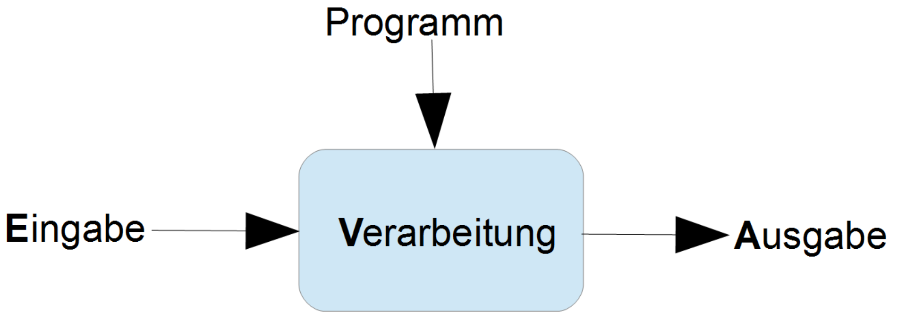

Grundlagen der Digitaltechnik
Information
Definition
Information ist der Vorgang Wissen zu übertragen.
Wissen
Definition
Wissen sind gespeicherte Daten.
Daten
Definition
Daten sind räumliche oder zeitliche Folgen von physikalischen Signalen oder Folgen von Bits. Daten können, oder auch nicht, Informationen enthalten, die ihnen eine Bedeutung verleihen.
Information lässt sich mittels Daten transportieren und speichern. Wo die Bedeutung klar ist, werden die Begriffe Daten und Information häufig synonym verwendet.
Ebenen des Verstehens
Um etwas zu verstehen zu können wird folgende Taktik angewendet.
-
Syntax: Grammatik, Ortographie
Die Syntax gibt an wie Daten angeschrieben werden müssen.
-
Semantik: Bedeutung, Sinn
Die Semantik gibt an was die Bedeutung der Daten ist.
-
Pragmatik
Die Pragmatik gibt an was durch die Vermittlung der Daten nun geschehen soll.
Informationstragende Einheiten
-
Bit
Die kleinst mögliche Einheit der Information ist das Bit. Bei einem Bit sind nur 2 Zustände möglich.Diese sind $0$ und $1$.
-
Byte
8 Bits bilden ein Byte.
-
Wort
16 Bits bilden ein Wort.
-
Doppelwort, zwei Wörter
32 Bits oder 2 Bytes bilden zwei Wörter oder auch ein Doppelwort.
Bemerkung
Siehe Vorsilben, für eine Tabelle der Binären-Vorsilben.
Diese Binären-Vorsilben wurden im Jahre 1998 von der International Electronical Commission oder IEC festgelegt, da vorher die dezimalen Vorsilben benutzt wurden um Binäremengen zu beschreiben was einen Fehler mit sich brachte.
Quantisieren
Die physikalische Welt besteht aus analogen Signalen oder Werten. Da die
analogen Signale und Werte kontinuierlich und extrem präzise sind, setzt
dies eine Quantisierung voraus.
Die analogen Signale und Werte werden also unterteilt in brauchbare und
leicht zu verarbeitbare Größen.
Eine Quantisierung kann in Wertebereich und im Zeitbereich stattfinden.
ADU, Analog Digital Umsetzer
Die Quantisierung findet mit einem sogenannten ADU statt.
Eine ADU hat eine angegebene Präzision diese wird in Bits gemessen.
Diese Präzision wird als Wortlänge bezeichnet.
Hieraus ergibt sich der Wertebereich der Digitalisierung.
Auflösung eines ADU's
Sei $x$ die Wortlänge eines bestimmten ADU's, also:
$$ x-Bit-ADU $$Die Anzahl an Bits gibt die Anzahl von möglichen Werten pro Einheit an, in einer Zweier Potenz.
Es gilt: $2^x$ - Anzahl an Werten oder Stufenhöhe für den ADU.
Linearität des ADU's
Die Linearität einer Messung eines ADU's gibt an wie gleich die Messungen von einander sind. Eine perfekte lineare Messung ist gewollt, sprich äquidistante Stufenhöhen. Das heißt die Messungen sind alle gleich Groß, keine ist größer oder kleiner als eine andere.
Genauigkeit eines ADU's
Die Genauigkeit eines ADU's setzt sich aus der Stufenhöhe und dem Linearitätsfehler zusammen.
Abtastrate eines ADU's
Die Abtastrate eines ADU's gibt an wie oft pro Zeiteinheit eine Messung durchgeführt wird.
Kenngrößen des Signals
Das Signal wird durch Periodendauer und Frequenz definiert.
Kenngrößen der Abtastung
Die Abtastung wird durch die Abtastpunkte und die Fensterdauer definiert.
Abtastfrequenz, Tastfrequenz, Nyquist-Frequenz
Aus der definition der Abtastfrequenz ergibt sich:
Formel
$$ f_{tast} = \frac{N}{T} $$wobei:
$$N,\ Anzahl\ der\ Abtastpunkte$$ $$ T,\ Fensterdauer $$Abtastintervall, Tastintervall
Aus der definition der Abtastintervall ergibt sich:
Formel
$$ t_{tast} = \frac{T}{N} $$wobei:
$$N,\ Anzahl\ der\ Abtastpunkte$$ $$ T,\ Fensterdauer $$Aliasing, Aliasing-Effekt
Aliasing ist ein Fehler der auftreten kann, bei dem ein Signal nicht eindeutig wieder rekonstruiert werden kann. Das geschieht wenn im abzutastendem Signal ein Signal vorkommt, das höher ist als die halbe Abtastfrequenz.
Shannon Theorem
Ein Signal kann aus seinen Abtastwerten nur dann eindeutig rekonstruiert werden, wenn die Abtastfrequenz mehr als doppelt so groß ist als die höchste im Signal vorkommende Frequenz.
Vermeidung von Aliasing
Der Aliasing-Effekt kann vermieden werden durch:
-
Erhöhung der Abtastfrequenz über das Doppelte der im Signal vorkommenden Frequenzen.
-
Analoge Tiefpass-Filterung des Signals vor der Abtastung.
Maximale Quantisierungsfehler
Der maximale Quantisierungsfehler $F_{Qmax}$ ergibt sich aus der Intervallgröße des analogen Signals, sowie dem Wertebereich des digitalen Signals und technisch bedingten Ansprechschwellen.
Unsicherheit im Quantisierungsfehler
Die Unsicherheit eines Quantisierungsfehler gibt an wie groß der Fehler
einer Quantisierung ist.
Die Unsicherheit wird oft mit dem Buchstaben $\delta$, angeben.
Formeln
Sei das analoge Signal in den Grenzen $S_{min} < S_{max}$ gegeben. Das digitale Signal verfüge über $N$ Werte, dann ergibt sich die
-
Intervallbreite
$$ \Delta S_i = \frac{S_{max} - S_{min}}{N - 1} $$ -
Maximalerquantisierungsfehler ohne Unsicherheit
$$ F_{Qmax} = \pm \frac{1}{2} \cdot \Delta S_i $$ -
Maximalerquantisierungsfehler mit Unsicherheit
$$ F_{Qmax} = F^{\prime}_{Qmax} \pm \frac{1}{2} \cdot \delta $$
Informaionsverarbeitungsprozess
Hier ist ein Schema des Informaionsverarbeitungsprozesses.
Selbstbezüglichkeit
Die Selbstbezüglichkeit ist die Eigenschaft eines Systems, sich auf die Art und Weise zu steuern wie es betrieben wird.
Datenverarbeitung
Alle Daten können mittels Zahlen repräsentiert werden.